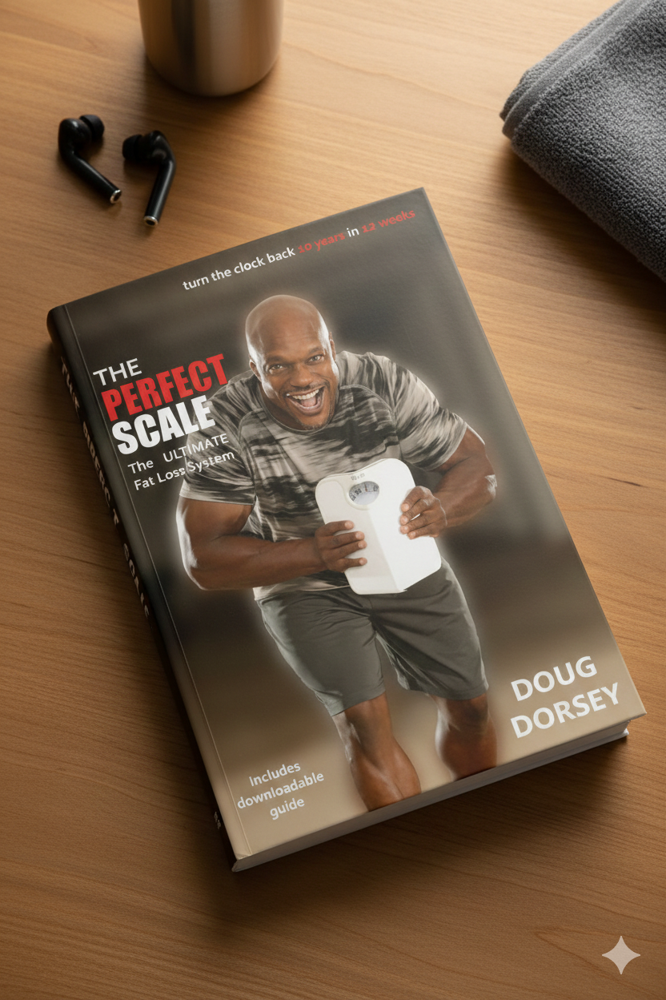

Transform your life with science-backed fitness! Join thousands of
women over 40 who have achieved lasting results.
Get Started Today!
Join Doug Dorsey as he shares science-backed fitness strategies, nutrition tips, and real-world advice for women over 40. Learn from 20+ years of experience helping thousands transform their health and confidence.
Honest talk and real tools to help you lose weight, stay consistent, and thrive in midlife.
Browse through our library of fitness and wellness content
Welcome back to Midlife Unleashed! In today’s episode, Doug Dorsey dives deep into the concept of longevity and why the "hustle harder" mindset just doesn’t serve us as we reach our 40s, 50s, and beyond.
Welcome back to Midlife Unleashed! As we kick off the new year, host Doug Dorsey opens up in an honest and practical discussion about the connection between money and health in midlife.
Welcome back to Midlife Unleashed! In today’s episode, host Doug Dorsey takes a step back from the day-to-day grind of fitness routines and healthy habits to tackle an even bigger topic: leadership in midlife.
Welcome back to another episode of Midlife Unleashed! If you’ve ever thought lifting weights was just about getting toned arms or burning a little fat, think again. In today’s episode, host and fitness expert Doug Dorsey dives deep into why building and maintaining muscle is so much more than a fitness trend, especially in midlife.
Welcome back to Midlife Unleashed! In today’s episode, host Doug Dorsey has an important conversation about reclaiming confidence in midlife. If you’ve ever caught yourself thinking, “I don’t feel like myself anymore,” or wondering where your self-assurance has gone, you’re absolutely not alone and this episode is here to help.
Welcome back to Midlife Unleashed! In today’s episode, Doug Dorsey dives deep into the concept of longevity and why the "hustle harder" mindset just doesn’t serve us as we reach our 40s, 50s, and beyond. The conversation challenges the relentless pursuit of intensity and instead makes a case for smarter..
Welcome back to another episode of Midlife Unleashed! This week, we’re flipping the script on everything you thought you knew about midlife. Is it really all about slowing down and settling for less, or could it actually be your prime time to thrive? Fitness and wellness expert Doug Dorsey, is here to bust the myths around aging and prove that midlife can be full of vitality, possibility, and growth.
Welcome back to Midlife Unleashed! In today’s milestone 10th episode, we’re getting real about the mindsets and lifestyle shifts that truly move the needle for your health in midlife. Transformation coach Doug Dorsey tackles the most stubborn mental traps like that all-or-nothing thinking and explain why perfectionism is often the enemy of real results.
Welcome back to another episode of "Midlife Unleashed"! Today, we’re tackling something everyone faces eventually, falling off your healthy routine. Whether it’s coming back from vacation, surviving a stressful work sprint, managing family emergencies, or just dealing with the ups and downs of life, slipping off track is inevitable. But don’t worry, it..
Welcome back to Midlife Unleashed! In today’s episode, we’re talking all about building healthy habits that actually stick. If you’ve ever started out strong on a new diet, workout routine, or life change - only to see it fizzle out as soon as life gets busy, this conversation is for you.
Welcome to Midlife Unleashed! If you’ve ever looked at meal prepping advice online and thought, “There’s no way I can pull that off,” you’re in the right place. This week, Doug Dorsey breaks down the realities of meal prepping for busy midlife professionals, parents, and caregivers — without the stress, monotony, or rigid rules you see on social media.
Welcome to the latest episode of Midlife Unleashed! This week, we're diving into the world of cutting-edge wellness treatments and exploring how they can boost both your self-worth and confidence - especially in midlife, when feeling and looking your best becomes more nuanced.
Welcome to another insightful episode of Midlife Unleashed! Today, we're diving into the exciting and at times controversial world of GLP1 medications, hailed by some as a weight-loss game-changer. Our host, Doug Dorsey, the fitness professor, discuss the buzz around medications like Ozempic, Wegovy, and Mounjaro.
Welcome back to Infinite Health! In today’s episode, host Dr. Arasi Maran to unpack one of the most misunderstood and invisible drivers of long-term health risk: visceral fat. We’re going beyond the number on the scale to uncover why weight isn’t the whole story...
Welcome to this episode of Midlife Unleashed, where we dive deep into the world of health, confidence, and vitality for those in their 40s, 50s, and beyond. Hosted by Doug Dorsey, also known as the Fitness Professor, we focus on empowering you to reclaim your health and thrive in your midlife.
In this insightful episode of "Midlife Unleashed", Ursula sits down with Fitness Professor Doug Dorsey to tackle the complex issue of weight loss after 40. Doug shares his extensive experience with clients who find themselves perplexed by the sudden changes in their bodies as they age.
Welcome to the inaugural episode of "Midlife Unleashed" with your host: Doug Dorsey. In this episode, we delve into Doug's journey from a child growing up in Southern New Jersey to becoming a healthy lifestyle transformation expert and a college professor.

Doug Dorsey's best-selling book shares the proven 16-week system that has helped thousands of women over 40 lose weight, build strength, and create lasting transformation.